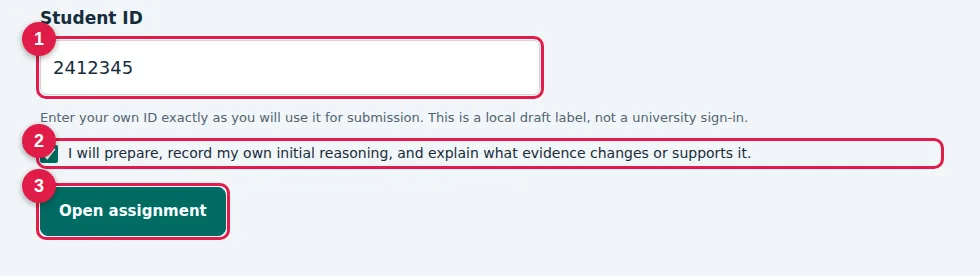
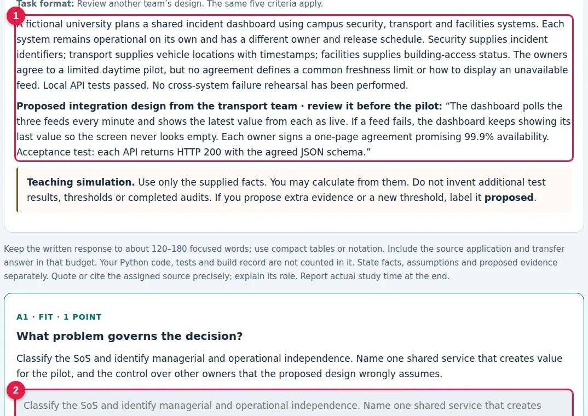
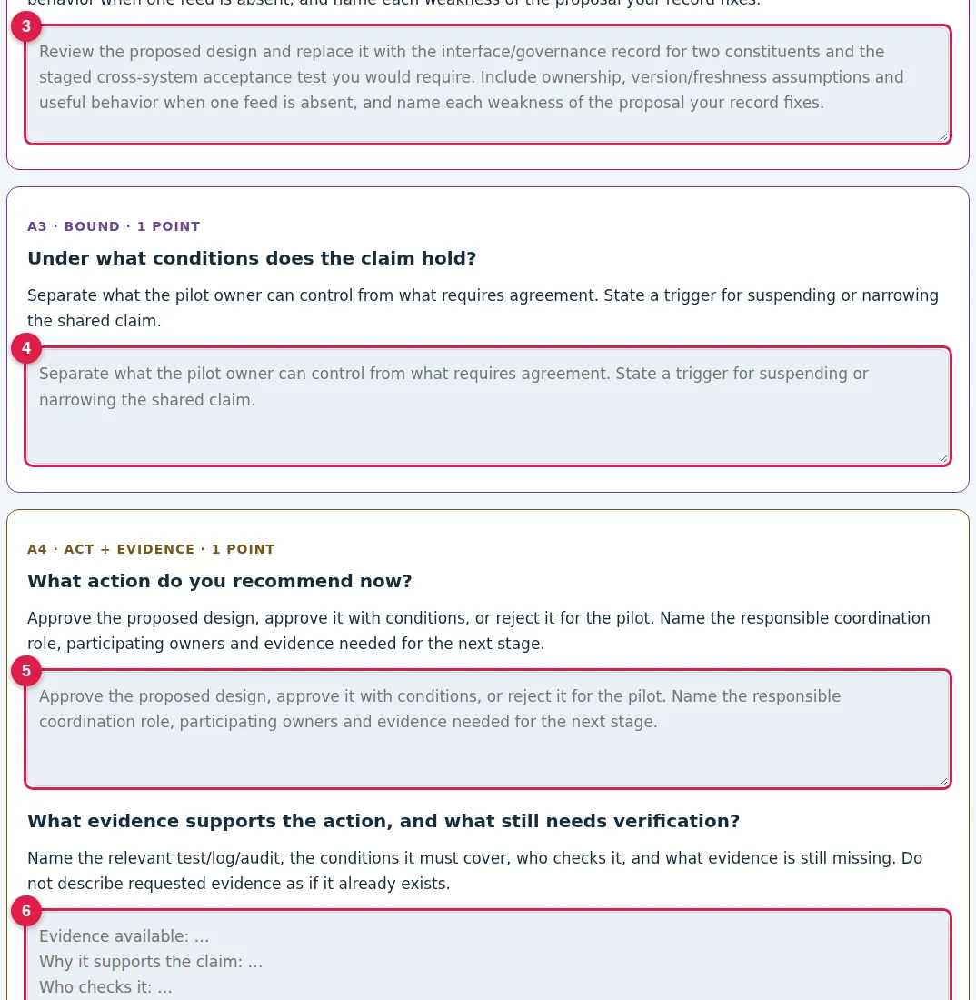
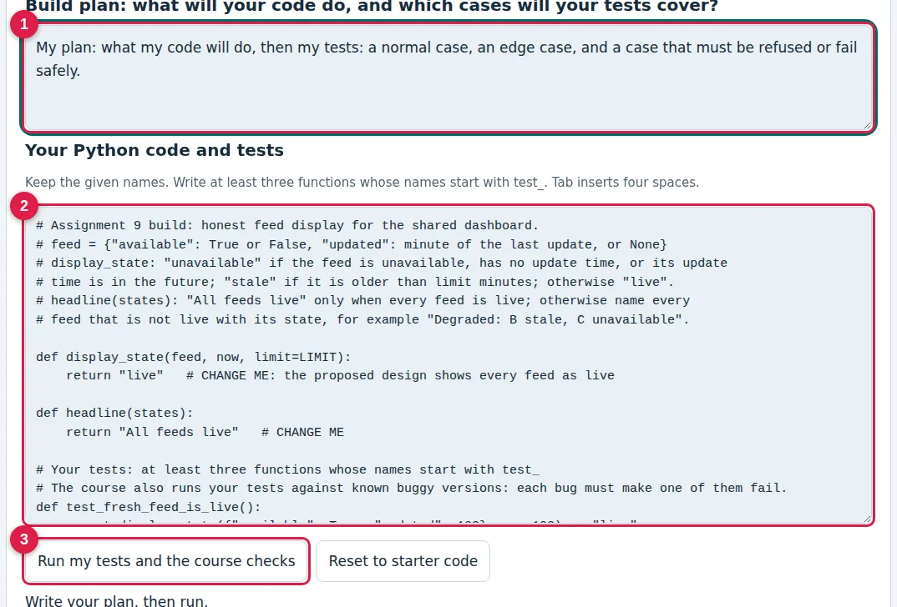
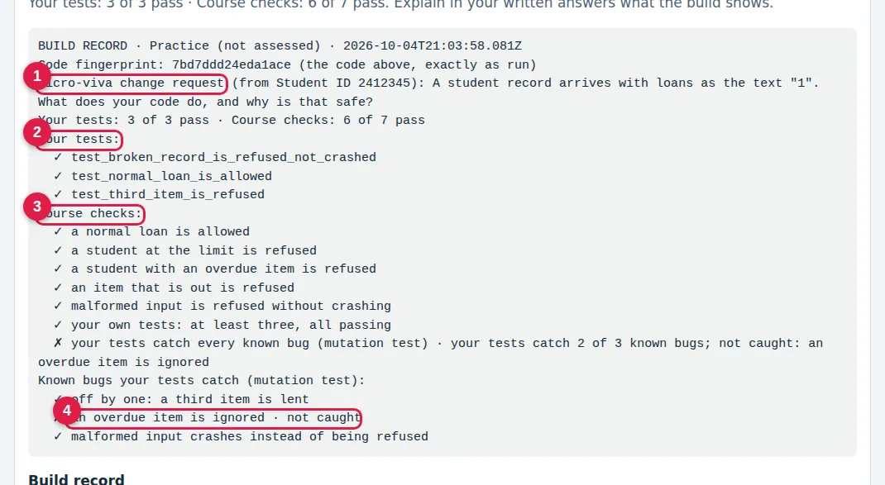
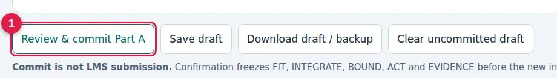
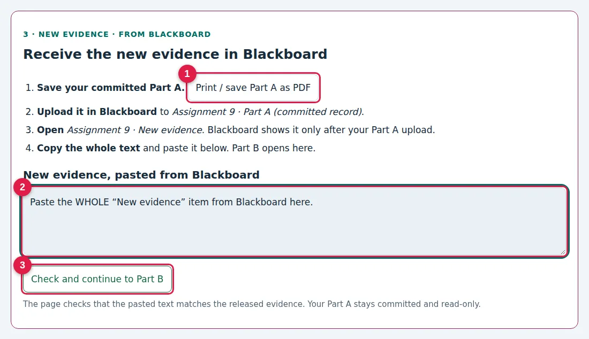
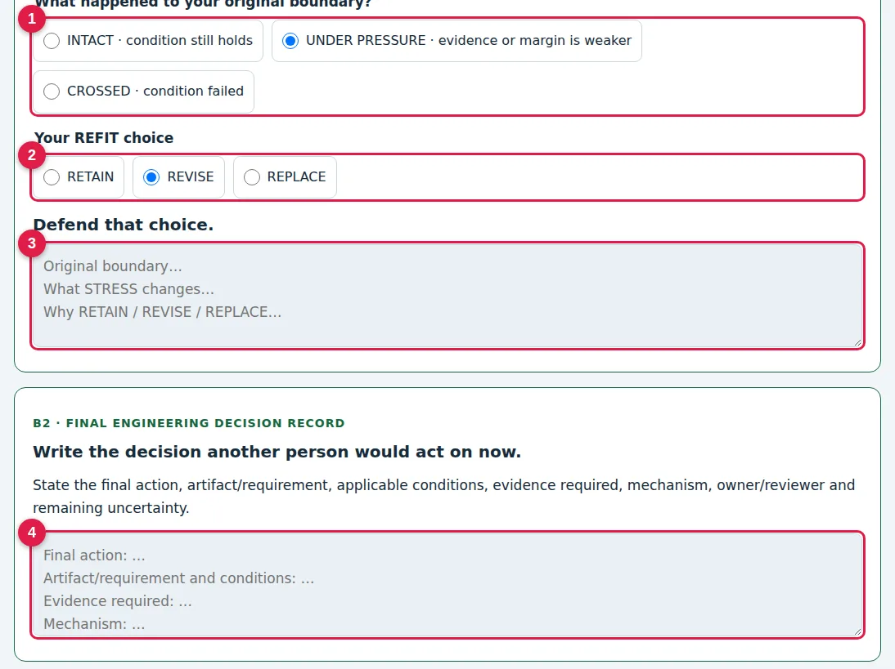
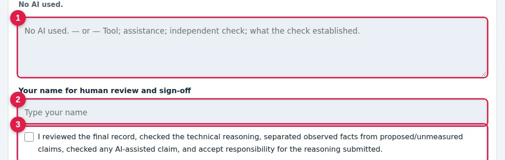
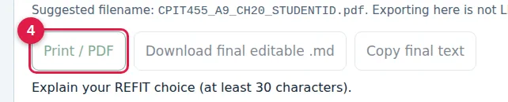

STUDENT GUIDE · ASSIGNMENTS
How to do an assignment, with a complete example
هذه الصفحة تشرح الواجب بالصور: تسع خطوات، ولكل خطوة صورة من الصفحة الحقيقية، ثم مثال محلول على شكل بطاقات.
This page answers the questions students ask most: how the course is graded, what to do in each step of an assignment, and what a good answer looks like. The worked example uses a practice case that is not one of your assignments, so you can copy its method but not its content. The practice build below runs exactly like the real one and is not assessed.
1 · How the course is graded · 2 · The steps, in pictures · 3 · Worked example: Part A · 4 · The Python build · 5 · New evidence and REFIT · 6 · Declare and submit · 7 · Questions students ask
1 · How the course is graded · 100 marks
| Component | Marks | What it covers |
|---|---|---|
| Assignments 1–9 | 30 | The nine chapter assignments, marked with each assignment's rubric (Assignment 1: 4 points; Assignments 2–9: 5 points each). |
| Midterm exam | 30 | The chapters taught before the exam: the five chapter objectives, the classroom concepts and the required source review. |
| Final exam | 30 | The whole course, on the same scope. |
| Participation | 10 | Coming prepared (the five-objective practice before class) and taking part in class: stations, votes and explain-it questions. Details are announced in Blackboard. |
How the assignment points become 30 marks. The nine assignments give 44 rubric points in total (4 + 8 × 5). Your assignment mark is your points ÷ 44 × 30. Each 5-point assignment is therefore worth about 3.4 marks of the course, so none of them is small.
Example
Points: 4 + 4.5 + 4 + 5 + 3.75 + 4.5 + 5 + 4 + 4.25 = 39 of 44. Assignment mark = 39 ÷ 44 × 30 = 26.6 of 30.
The Python build in Assignments 3–9 is part of each assignment's 5 points (the second rubric row). It is not an extra grade. The micro-viva is a short check of that same work, not a separate exam.
2 · The nine steps, in pictures الخطوات التسع بالصور
Each card opens the picture of that step. اضغط على أي خطوة لترى صورتها الحقيقية.
- 115 minPrepareLecture, the two readings, the five practice questionsاحضر المحاضرة، اقرأ المصدرين، وحلّ الأسئلة الخمسة
- 21 minOpenOpen it with your Student ID, in the same browser every timeافتح الواجب برقمك الجامعي، ومن نفس المتصفح دائماً
- 320 minPart AFIT · artifact · BOUND · ACT + EVIDENCE, 120–180 wordsاكتب حكمك الأول: المشكلة، المهمة، الحدود، القرار والدليل
- 430 minBuildPlan, complete the code, write 3+ tests, Runاكتب الخطة، أكمل الكود، 3 اختبارات على الأقل، ثم Run
- 51 minCommitReview & commit Part A: it becomes read-onlyثبّت الجزء A: يصبح للقراءة فقط
- 62 minNew evidenceIt opens on the page right after you commit. Read itيظهر الدليل الجديد في الصفحة مباشرة بعد التثبيت: اقرأه
- 710 minPart BBoundary status, then RETAIN / REVISE / REPLACE and whyهل تغيّر قرارك؟ اختر وبرّر، ثم اكتب القرار النهائي
- 82 minSignDeclare AI use, type your name, tick the boxصرّح بالذكاء الاصطناعي، اكتب اسمك، وضع العلامة
- 93 minSubmitPrint / PDF, then upload the PDF in Blackboardصدّر PDF وارفعه في Blackboard
Step 2 · Open the assignment
الخطوة 2 · افتح الواجب
- 1Type your Student IDاكتب رقمك الجامعي
- 2Tick the pledgeضع علامة على التعهد
- 3Open assignmentاضغط Open assignment
Step 3 · Part A: read the case, then FIT
الخطوة 3 · الجزء A: اقرأ الحالة، ثم FIT
- 1Read the case: only these facts countاقرأ الحالة: الحقائق المكتوبة فقط هي المعتمدة
- 2FIT: the problem that decides the caseFIT: ما المشكلة التي تحكم القرار؟
Step 3 · Part A: the other four fields
الخطوة 3 · الجزء A: بقية الحقول
- 3The chapter artifact (TRACE, TEST, …)مهمة الفصل (TRACE أو TEST …)
- 4BOUND: when your claim stops holdingBOUND: متى يتوقف حكمك عن الصحة؟
- 5ACT: what to do now, and who owns itACT: ماذا تفعل الآن ومن المسؤول؟
- 6EVIDENCE: what someone else can checkEVIDENCE: ما الدليل الذي يستطيع غيرك فحصه؟
Step 4 · The Python build
الخطوة 4 · البناء البرمجي
- 1Write a short plan firstاكتب خطة قصيرة أولاً
- 2Complete the code and write 3+ testsأكمل الكود واكتب 3 اختبارات على الأقل
- 3Run my tests and the course checksاضغط Run لتشغيل الاختبارات
Step 4 · Read your build record
الخطوة 4 · اقرأ سجل البناء
- 1Your micro-viva change requestطلب التعديل الخاص بك للمقابلة القصيرة
- 2Your own tests: ✗ means fix code or testاختباراتك: ✗ تعني أصلح الكود أو الاختبار
- 3Course checks: the rule from the taskفحوصات المقرر: قواعد الواجب
- 4“Not caught”: add a test for this bug«not caught»: أضف اختباراً يكشف هذا الخطأ
Step 5 · Commit Part A
الخطوة 5 · ثبّت الجزء A
- 1Review & commit Part A: freezes Part A, it is not submissionReview & commit يثبّت الجزء A، وهو ليس تسليماً
Step 6 · The new evidence opens on the page
الخطوة 6 · الدليل الجديد يظهر في الصفحة
- 1Read the new evidence: it appears right after you commitاقرأ الدليل الجديد: يظهر مباشرة بعد التثبيت
- 2Part B starts here, on the same pageالجزء B يبدأ هنا في نفس الصفحة
Step 7 · Part B: REFIT
الخطوة 7 · الجزء B: المراجعة
- 1What happened to your boundary?ماذا حدث لحدود حكمك؟
- 2RETAIN, REVISE or REPLACEأبقِ، عدّل، أو استبدل القرار
- 3Defend the choice from the new evidenceبرّر اختيارك من الدليل الجديد
- 4The final decision another person can act onالقرار النهائي الذي ينفّذه غيرك
Step 8 · Declare AI and sign
الخطوة 8 · التصريح والتوقيع
- 1AI use, or “No AI used.”استخدام الذكاء الاصطناعي، أو «No AI used.»
- 2Type your nameاكتب اسمك
- 3Tick: you reviewed it and take responsibilityضع علامة: راجعت العمل وأتحمّل مسؤوليته
Step 9 · Export and submit
الخطوة 9 · صدّر وسلّم
- 4Print / PDF, check the file, upload it in BlackboardPrint / PDF، راجع الملف، ثم ارفعه في Blackboard
Step 9 · In Blackboard: one item
الخطوة 9 · في Blackboard: خانة واحدة فقطUpload your final PDF here, before the deadline. That is all.
ارفع ملف PDF النهائي هنا قبل الموعد. هذا كل شيء.
Text version of the steps · النسخة النصية
- Prepare (15 min). Attend or open the lecture, read the two named source selections, and answer the five practice questions.
- Open the assignment from the learning path with your Student ID. Always use the same browser and the same ID: drafts are saved on your device only.
- Part A, your first judgment (20 min, 120–180 words). Answer the fields: the problem (FIT), the chapter artifact, BOUND, ACT and EVIDENCE, the source concept and the transfer question.
- Python build (30 min). Write a short plan, complete the starter code, write at least three tests, and select Run my tests and the course checks.
- Review & commit Part A. Part A becomes read-only. This is not submission.
- Read the new evidence. It opens on the page right after you commit, and Part B starts below it.
- Part B, REFIT (10 min). Choose the boundary status (INTACT, PRESSURED or CROSSED), choose RETAIN, REVISE or REPLACE, justify it, and write the final decision record.
- Declare AI use and sign. Say which AI you used and what you checked, or write “No AI used.”, then type your name and tick the box.
- Export and submit. Use Print / PDF, check the file, and upload it to the assignment’s single item in Blackboard before the deadline. That is the only upload.
3 · Worked example: Part A مثال محلول
Practice case · fictional, not assessed
A faculty lab lends cameras and sensor kits. The proposed rule: a student may hold at most two items, and may not borrow while any item is overdue. A new self-service kiosk passed tests in which students borrowed one item. The overdue flag is copied from the library system every night at 02:00. No test tried a third item or an overdue student. You advise the lab manager: open the kiosk, open it with restrictions, or hold.
Each card: ✓ a strong answer and ✗ a weak one for the same field. في كل بطاقة: ✓ إجابة قوية، و✗ إجابة ضعيفة تخسر الدرجة. The whole strong Part A is about 160 words.
FIT ما المشكلة التي تحكم القرار؟
The decision depends on whether the kiosk enforces the loan rule on every request. The passed tests show only the allowed path, so they cannot show that a third item or an overdue student is refused.
Security is very important.
Artifact (here TEST) مهمة الفصل: هنا كتابة الاختبارات
T1 0 items, nothing overdue → lent. T2 holds 2, asks for a third → refused, count stays 2. T3 overdue → refused. All three ran in my build; on the real kiosk they are proposed.
Test the system thoroughly.
BOUND متى يتوقف حكمك عن الصحة؟
Holds while the overdue flag is at most 24 hours old and the kiosk is the only way to borrow. Stops if the copy timestamp is older than 24 hours, or staff lend at the counter.
If problems occur.
ACT ماذا تفعل الآن، ومن المسؤول؟
Proposed: open with one item per student until T2 and T3 pass on the real kiosk. Owner: lab manager; reviewer: faculty IT.
Release after testing.
EVIDENCE ما الدليل الذي يستطيع غيرك فحصه؟
My build refuses the third item and the overdue student (all course checks pass, 3 of 3 known bugs caught). Still to verify: the real kiosk and the age of the flag.
The tests passed.
Source + transfer مفهوم من القراءة، وتطبيق مفهوم آخر
Slide [from your assigned reading] · fail-safe defaults · my rule refuses any record it cannot read. Transfer: if the library copy fails, refuse loans that need it.
The textbook says safety matters.
Weak answers lose credit because nothing in them is specific to the case, nothing can be checked, and the boundary cannot be observed. الإجابة الضعيفة عامة، ولا يمكن فحصها، وحدودها غير قابلة للملاحظة.
4 · The Python build: try it here
This practice build works exactly like the one in Assignments 3–9. Try the starter first and read the failures, then complete it. The full example solution is below the build.
PYTHON BUILD · PRACTICE, NOT ASSESSED
Practice build: the loan rule
Write can_borrow(student, item) for the lab-equipment desk, and tests that try to break the rule. Not assessed: use it to learn the build before your first assignment.
Budget about 30 minutes. Python runs in your browser: nothing to install, and nothing is uploaded. The first run downloads Python once (about 10 MB, internet needed). Passing every check is necessary, not sufficient: your written record must use what the build shows.
Your own tests are tested too: the course runs them against known buggy versions of this code, and each bug must make one of your tests fail. Your build record names a micro-viva change request chosen from your Student ID. Be ready to make that change in front of your instructor and explain which tests change and why.
Primary source · about 15 minutes: J. H. Saltzer and M. D. Schroeder, “The Protection of Information in Computer Systems,” Proceedings of the IEEE 63(9), 1975. Read it for the principle “fail-safe defaults”. Which line of can_borrow refuses when it cannot read the input? Use the answer in your build plan.
The course checks your build must pass
- a normal loan is allowed
- a student at the limit is refused
- a student with an overdue item is refused
- an item that is out is refused
- malformed input is refused without crashing
- your own tests: at least three, all passing
- your tests catch every known bug (mutation test)
Keep the given names. Write at least three functions whose names start with test_. Tab inserts four spaces.
Write your plan, then run.
A good build plan (2–3 sentences)
Strong
can_borrow refuses unless the item is available, the student holds fewer than LIMIT items and nothing is overdue. Any record it cannot read is refused. Tests: a normal loan, the third item (must be refused), an overdue student (must be refused) and a broken record (refused, not a crash).
A complete solution with four tests
def can_borrow(student, item):
try:
loans = student["loans"]
if type(loans) is not int or loans < 0:
return False
return item["available"] is True and loans < LIMIT and student["overdue"] is False
except (KeyError, TypeError):
return False # fail-safe default: anything we cannot read is refused
def test_normal_loan_is_allowed():
assert can_borrow({"id": "s1", "loans": 0, "overdue": False}, {"id": "cam-3", "available": True})
def test_third_item_is_refused():
assert can_borrow({"id": "s1", "loans": 2, "overdue": False}, {"id": "cam-3", "available": True}) is False
def test_overdue_student_is_refused():
assert can_borrow({"id": "s1", "loans": 0, "overdue": True}, {"id": "cam-3", "available": True}) is False
def test_broken_record_is_refused_not_crashed():
assert can_borrow({}, {"id": "cam-3", "available": True}) is False
How to read the build record
- ✓ / ✗ under “Your tests”: your own tests. A ✗ there means your code or your test is wrong. Fix one of them.
- ✓ / ✗ under “Course checks”: the rule from the task. Each ✗ says what failed, for example “a student at the limit must be refused”.
- “Known bugs … not caught”: your tests pass, but they would also pass on a buggy version. Add a test that would fail on that bug. Example: delete
test_overdue_student_is_refusedabove and run again; the record says “not caught: an overdue item is ignored”. - Micro-viva change request: the change you may be asked to make in front of your instructor. Practise it: if you wrote the code yourself, it takes a minute.
- If you cannot fix a failure before the deadline, keep the record and explain the failure honestly in your text. That still earns partial credit; hiding it does not.
5 · New evidence (STRESS) and REFIT
After you commit Part A, the new evidence opens on the page. It is a new fact that tests your boundary. For the practice case, imagine this:
New evidence · practice
The library reports that the nightly copy failed on 3 of the last 30 nights. On those days the overdue flag was up to 48 hours old.
Boundary status
Strong
CROSSED. My boundary said the claim holds while the flag is at most 24 hours old. On 3 nights it was 48 hours old, so an overdue student could have borrowed.
REFIT · RETAIN, REVISE or REPLACE
Strong
REVISE. Keep the restricted opening, and add a fail-safe: when the copy is older than 24 hours, the kiosk refuses loans and sends students to the counter, where staff check the library record by hand.
A well-justified RETAIN earns the same credit as a change. Example: if the evidence had said the copy never failed, RETAIN with that reason is correct.
Final engineering decision record (2–3 sentences)
Strong
Open the kiosk with restrictions (one item per student) once T2 and T3 pass on the real kiosk. When the overdue copy is older than 24 hours, the kiosk refuses and the counter checks by hand. Owner: lab manager; review after 30 days of copy timestamps.
6 · Declare AI use, sign and submit
AI-use declaration · two acceptable examples
“No AI used.”
“ChatGPT: I asked for edge cases for a loan rule. I kept two (third item, broken record) and rejected one (negative loans, already covered). I wrote and ran all code and tests myself.”
AI help is allowed when you declare it. You remain responsible: in the micro-viva you must explain and change your own code.
- Type your name for human review and tick the attestation.
- Select Print / PDF (or Download final editable .md if asked), and open the file to check it.
- Submit the final file in Blackboard before the deadline. Exporting on the site is not submission.
7 · Questions students ask أسئلة الطلاب
Is “Review & commit Part A” my submission? هل Review & commit هو التسليم؟ لا.
No. It freezes Part A. You submit the final PDF in Blackboard at the end.
Can I change Part A after committing? هل أعدّل الجزء A بعد التثبيت؟ لا، عدّل في الجزء B.
No. Use Part B (REFIT) to revise your decision. That is the point of the method.
I opened the assignment on another computer and my draft is gone. فتحت من جهاز آخر واختفت مسودتي.
Drafts stay in the browser where you wrote them. Go back to that browser, or use Download draft / backup before you switch.
Python does not load. بايثون لا يعمل.
The first run downloads Python once (about 10 MB), so you need internet. Use a current Chrome, Edge, Firefox or Safari on a laptop, and try again.
A course check fails and I cannot fix it. فحص لا ينجح ولا أعرف إصلاحه.
Keep the record and explain the failure in your text. An honest explanation earns partial credit.
It says a known bug is “not caught”. يظهر لي «not caught».
Your tests are too easy. Add a test that a buggy version would fail. The bug's name tells you what to test.
What do I upload to Blackboard, and when? ماذا أرفع في Blackboard ومتى؟ ملف PDF النهائي فقط، مرة واحدة.
Only the final PDF, once, to the assignment’s item in Blackboard, before the deadline. You do not upload Part A separately.
How many words? كم كلمة؟ 120–180، والكود لا يُحسب.
About 120–180 for the written answers. Code, tests and the build record are not counted.
Can I use ChatGPT or another AI? هل أستخدم ChatGPT؟ نعم، مع التصريح.
Yes, if you declare it and check its output. If you cannot explain or change your own code in the micro-viva, the build loses its credit.
What is the micro-viva? ما المقابلة القصيرة؟ دقيقتان تشرح فيهما عملك.
A two-minute conversation with a few students per section. You explain your work and make the change request named in your build record.
Where do I ask for help? أين أسأل؟ في الكلاس أو الساعات المكتبية أو البريد.
In class, in office hours, or by email to the instructor, with your Student ID and the assignment number.